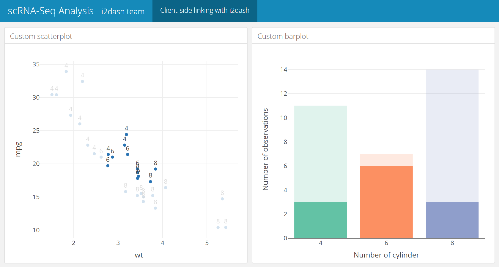

Developer_guide.RmdCompiled date: 2020-11-06
Last edited: 23.09.2019
License:
It is possible to create new components that can be used as regular i2dash.scrnaseq functions and extend the capabilities of your i2dashboard. This tutorial shows how to create a new component and how to implement shiny input and output widgets to provide interactive elements for the user. Moreover, it is explained how to create a new customized page and link plotly based charts together and datatables of DT with several plotly based charts.
This example demonstrates how to create a plotly based bubble chart as an i2dash component.
At first, we need to create a function with minimal plotly code for the bubbleplot. The [...] argument allow us to expand our possibilities to modify the plot. This code can be written in the file R/visualization_functions.R:
#' Render a bubbleplot with plotly. #' #' @param x Numeric observations mapped to the x-axis. #' @param y Numeric observations mapped to the y-axis. #' @param size Numeric values defining the size of the dots. #' @param x_title The title of the x-axis. #' @param y_title The title of the y-axis. #' @param ... these arguments are of either the form value or tag = value and should be valid for the 'plotly::plot_ly()' method. #' #' @return An object of class \code{plotly}. #' @export plotly_bubbleplot <- function(x, y, size, x_title = NULL, y_title = NULL, ...){ plotly::plot_ly(x = x, y = y, size = size, type = 'scatter', mode = 'markers', marker = list( oparcity = 0.5), ...) %>% plotly::layout(xaxis = list(title = x_title, showgrid = FALSE), yaxis = list(title = y_title, showgrid = FALSE) ) }
Now we create a new file R/bubbleplot.R and write the function that evaluates the input and saves it in an .Rds file for this component. The input for this function:
bubbleplot <- function(dashboard, x, y, size, colour_by = NULL, labels = NULL, title = NULL, x_title = NULL, y_title = NULL) { # see code below }
Inside the function, we need to validate the input:
# Validate input assertive.types::assert_is_any_of(x, c("data.frame", "matrix")) assertive.types::assert_is_any_of(y, c("data.frame", "matrix")) assertive.types::assert_is_any_of(size, c("data.frame", "matrix")) # select columns only containing numeric or integer values x %<>% as.data.frame() %>% dplyr::select_if(function(col) is.integer(col) | is.numeric(col)) y %<>% as.data.frame() %>% dplyr::select_if(function(col) is.integer(col) | is.numeric(col)) size %<>% as.data.frame() %>% dplyr::select_if(function(col) is.integer(col) | is.numeric(col)) # provide column names if(is.null(colnames(x))) colnames(x) <- paste0("X_", 1:ncol(x)) if(is.null(colnames(y))) colnames(y) <- paste0("Y_", 1:ncol(y)) if(is.null(colnames(size))) colnames(size) <- paste0("Size_", 1:ncol(size)) # check correct dimensions if(nrow(x) != nrow(y)) stop("The number of rows in 'x' and 'y' is not equal.") if(nrow(x) != nrow(size)) stop("The number of rows in 'x' and 'size' is not equal.") # check optional parameters if(!is.null(colour_by)){ assertive.types::assert_is_any_of(colour_by, c("data.frame", "matrix")) colour_by %<>% as.data.frame() %>% dplyr::select_if(function(col) is.integer(col) | is.numeric(col) | is.factor(col)) if(is.null(colnames(colour_by))) colnames(colour_by) <- paste0("Color_", 1:ncol(colour_by)) if(nrow(x) != nrow(colour_by)) stop("The number of rows in 'x' and 'colour_by' is not equal.") } if(!is.null(labels)) assertive.types::assert_is_any_of(labels, "vector") if(!is.null(labels)) assertive.types::is_character(title) if(!is.null(labels)) assertive.types::is_character(x_title) if(!is.null(labels)) assertive.types::is_character(y_title)
Then the input is saved into an .Rds file. The title of the component as well as the env_id are not saved and will be provided as characters by knitting the template.
# Create random env id env_id <- paste0("env_", stringi::stri_rand_strings(1, 6, pattern = "[A-Za-z0-9]")) # Create component environment env <- new.env() env$x <- x env$y <- y env$size <- size env$colour_by <- colour_by env$labels <- labels env$x_title <- x_title env$y_title <- y_title saveRDS(env, file = file.path(dashboard@datadir, paste0(env_id, ".rds")))
At the end of the function we return the rendered R markdown string of the component.
# Expand component timestamp <- Sys.time() expanded_component <- knitr::knit_expand(file = system.file("templates", "bubbleplot.Rmd", package = "i2dash.scrnaseq"), title = title, env_id = env_id, date = timestamp) return(expanded_component)
In the next step, we create an R markdown template file of the bubbleplot component inst/templates/bubbleplot.Rmd. At the top of this document the title in curved brackets will be replaced by the provided title during knitting. Also the env_id will be replaced and the correct .rds file will be read in. is_shiny contains a logical whether the i2dashboard is interactive and should use shiny or not.
### {{ title }}
```{r}
{{ env_id }} The following R code chunk is also in the same file inst/templates/bubbleplot.Rmd. This code chunk will be executed, if shiny is not used. All variables we define in this code chunk that are not inside a function should be unique. This is made possible by using the env_id in the curved brackets. During the knitting process, {{ env_id }} will be replaced by the ‘real’ env_id and the variable names will be valid in the final R markdown string.
First we set the variables for x_title and y_title. If the user had not provided his own titles, the names of the first column of x and y are used as the titles. If colour_by was provided the first column will be used as the input vector. In case of labels, the row names of x will be used, if labels was not provided by the user.
Next, the plotly chart is created by the i2dash.scrnaseq::plotly_bubbleplot() function. In the static mode the first columns of the dataframes x and y are used as input vectors. Finally a dataframe is created, that will be then provided as download.
```{r, eval=!is_shiny}
# set variables
# the first column is always used
if(!is.null({{ env_id }}$x_title)) x_title_{{ env_id }}
By adding Shiny to a flexdashboard, we create a dashboard that enables the user to change underlying parameters and see the results immediately. In our case we provide the possibility to select the values that should be mapped to the x- and y-axis as well as the values, that should be used as size factor and colouring. (The user can select the names of the column that should be used through shiny input widgets.) In a flexdashboard the code for the UI as well as the server code can be used within the same code chunk.The webpage of flexdashboard provides a good description how to use Shiny with flexdashboard (see here).
First we create Shiny selectInput() widgets if the target dataframe has more than one column. Also a download button will be provided, so the user can download the data that is used for the created plot. We handle the inputs by creating a reactive expression for each dataframe. Inside the reactives it is checked, if the dataframe has more than one column. If this is the case, the input values from the selectInput() widgets should be used. Then a downloadHandler() creates a dataframe containing the currently selected x, y, size and colour values for the download. Plotly’s function renderPlotly() outputs and renders a plotly object (generatet by the function i2dash.scrnaseq::plotly_bubbleplot()) within Shiny. Finally, the UI elements are stored in a dropdown menu created with the package shinyWidgets.
```{r, eval=is_shiny}
#
# shiny input widgets
#
ui_list 1){
ui_list 1){
ui_list 1){
ui_list 1)
ui_list size: ',size_{{ env_id }}()), y_title = y_title, x_title = x_title)
})
#
# Layout of component
#
shiny::fillRow(flex = c(NA, 1),
shinyWidgets::dropdownButton(div(style='max-height: 350px; overflow-x: auto;',do.call(shiny::inputPanel, ui_list)),
circle = TRUE, status = 'danger', icon = icon('gear'), width = '300px',
tooltip = shinyWidgets::tooltipOptions(title = 'Click, to change plot settings:'))
,
plotly::plotlyOutput('plot_{{ env_id }}', height = '100%')
)
```
In the following, it is explained how to design a custom flexdashboard page and use it as a template within i2dash. The creation of a customized page allows the developer to use his own layout and enables the possibility for linking components together.
The linking of components is based on the relation of the data used in the components (e.g. the data is organized in one dataframe and the components visualize different aspects of this dataframe). The linking mechanic contains several clicking and selecting events to highlight datapoints or recalculate the chart along the selected datapoints.
In order to accomplish this task, it is necessery to create an R function for validating and saving the input similar to the example above. The data necessary for all components of the custom page should be validated by this function.
Furthermore it is necessary to create a second file containing the Rmd template. The Rmd document does not contain the typical YAML header with the render parameters. This header will be added to the final i2dashboard in the assembling process. The Rmd document rather contains the template code of several components. As described above each component can provide a static and interactive version.
R Plotly supports several possibilities for linking charts together. It is possible to link plotly charts at client-side, which makes it possible to use this interactivity without Shiny in the static mode. In this case it is possible to use plotly in combination with the package Crosstalk or manipulate the plots via JavaScript. In the chapter @ref(plotlystatic) we demonstrate how to use the client-side linking based on a SharedData object from Crosstalk. Nevertheless, the capabilities of client-side linking are limited by data transformation. R Plotly also supports several click events with Shiny that we can use for server-side linking of components in the interactive mode. This is explained in the chapters @ref(plotlyinteractive) and enables more complex datatransformations between the components.
This resource provides a very detailed explanation of the client-side linking with R plotly. The example Rmd code below describes a very simple template for a page containing a scatterplot and a barplot linked together. The R code chunk that loads the data and checks, if shiny should be used, is only present once. The env_id is identical in all components of the page. For demonstration purpose the mtcars dataset is used instead of loading the data from the rds file. The following page contains a two-columns layout. In the scatterplot code chunk we create a SharedData obejct with the function plotly::highlight_key(). The plotly object uses this SharedData object instead of a simple dataframe. plotly::highlight('plotly_selected') defines the selection mode. In this case, we want to enable the selection of datapoints. The barplot code chunk creates the barplot chart, which uses the same SharedData object. The use of the same graphical queries defined by the SharedData object, enables the linking between the two plots. In this examle we can select datapoints of the scatterplot, which results in the rerendering of the number of observations of the barplot. We can also select bars of the barplot and the datapoints that belong to the bars will be highlighted.
It is also possible to create custom event handlers with JavaScript as described here and use it in combination with plotly’s JavaScript functions Plotly.restyle and Plotly.relayout to change another plotly chart.
https://plot.ly/javascript/plotlyjs-function-reference/#plotlyrestyle
Client-side linking with i2dash
====================================================
Column
----------------------------------------------------
### Custom scatterplot
```{r}
#{{ env_id }} %
plotly::highlight('plotly_selected')
```
Column
----------------------------------------------------
### Custom barplot
```{r barplot, eval=is_shiny}
plotly::plot_ly(sd_{{ env_id }}, x = ~cyl, color = ~cyl) %>%
plotly::layout(
xaxis = list(title = 'Number of cylinder'),
yaxis = list(title = 'Number of observations'),
barmode = 'overlay',
showlegend = FALSE
) %>%
plotly::highlight('plotly_selected')
```

The following example is straight forward and demonstrates, how we can expand the capabilities of the dashboard by using Shiny widgets. The linking is implemented through plotly’s event_data(), which outputs the data of the selected/clicked or brushed points and defines the type of plotly event. With the source argument we provide an unique identifier to the scatterplot so we can adress the right plot in the `event_data() function. By using the key parameter, we define an unique identifier for for each row. In the barplot chunk the keys of the event_data are used to subset the dataframe according to the selected points and rerender the barplot. The linking of the barplot with the scatterplot require more complex code, which is not shown here. This resource provides a very detailed explanation of the server-side linking with R plotly.
An alternative solution would be to create a SharedData object in a reactive expression according to the Shiny input widget and use the Crosstalk mechanic to accomplish the task, similar to the example above. In more complex Shiny apps we do not recomend to use Shiny input widgets and reactives along with Crosstalk because the interference can cause unexpected behaviours.
Server-side linking with i2dash
====================================================
Column
----------------------------------------------------
### Custom scatterplot
```{r}
#{{ env_id }} % dplyr::select_if(is.factor) %>% colnames()
# shiny input widget for grouping
df_input %
plotly::layout(
xaxis = list(title = names(df[input$grouping_df])),
yaxis = list(title = 'Number of observations'),
barmode = 'overlay',
showlegend = FALSE
)
})
plotly::plotlyOutput('barplot_df', height = '100%')
```